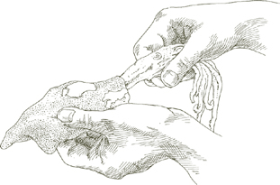
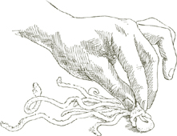
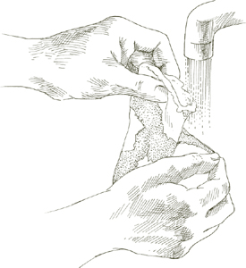
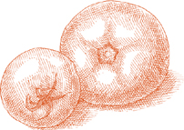
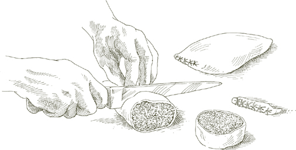

LЗАГЛАВНО ДО Мой родной регион Романья, расположенный на северном берегу Адриатического моря, стал известен своей вереницей пляжных городков и круглосуточными дискотеками, он славился своей рыбой. Рыбаки Романьи не имеют себе равных в искусстве приготовления на гриле. Их секрет, помимо свежести улова, заключается в том, чтобы вымачивать рыбу в маринаде из оливкового масла, лимонного сока, соли, перца, розмарина и панировочных сухарей в течение часа или более, прежде чем запекать ее. Этот метод хорошо подходит для любой рыбы, подслащая ее естественный морской вкус и предохраняя мясо от высыхания на огне.
На 4 и более порций
2,5–3 фунта целой рыбы, выпотрошенной и очищенной от чешуи, ИЛИ рыбные стейки
Соль
Черный перец, свежемолотый с мельницы
¼ стакана оливкового масла первого отжима
2 столовые ложки свежевыжатого лимонного сока
Небольшая веточка свежего розмарина ИЛИ ½ чайная ложка сушеных листьев, очень мелко нарезанных
⅓ чашки мелких, сухих, неароматизированных панировочных сухарей
НЕОБЯЗАТЕЛЬНЫЙ: гриль на углях или дровах.
НЕОБЯЗАТЕЛЬНЫЙ: небольшая веточка свежего лаврового листа или несколько сушеных листьев.
1. Вымойте рыбу или рыбные стейки в холодной воде, затем тщательно промокните бумажными полотенцами.
2. Обильно посыпьте рыбу солью и перцем с обеих сторон, выложите на большое блюдо, добавьте оливковое масло, лимонный сок и розмарин. Переверните рыбу два или три раза, чтобы она хорошо покрылась. Добавьте панировочные сухари, еще раз перевернув рыбу, пока она не покроется ровным слоем пропитанных маслом панировочных сухарей. Маринуйте 1–2 часа при комнатной температуре, время от времени переворачивая и поливая рыбу.
3. Если вы используете древесный уголь или дрова, зажгите уголь вовремя, чтобы он образовал белую золу перед приготовлением, или заблаговременно разожгите древесину, чтобы она превратилась в горячие угли. Если вы используете домашний газовый или электрический гриль, разогрейте его как минимум за 15 минут, прежде чем приступить к приготовлению.
4. Поместите рыбу на расстоянии 4–5 дюймов от источника тепла. Не выбрасывайте маринад. Если готовите на углях или дровах, бросьте лавровый лист в огонь, в противном случае не добавляйте его. Жарьте с обеих сторон до готовности, перевернув рыбу один раз. В зависимости от толщины рыбы стейков или целой рыбы, это может занять от 5 до 15 минут. Во время приготовления поливайте верх маринадом. Подавайте горячими с гриля.
WЗДЕСЬ В МИРЕ вы можете быть, когда готовите рыбу в Сальморильо стиле, вы можете подумать, что дышите острым летним воздухом Средиземноморья. Оливковое масло, лимонный сок и орегано образуют соблазнительно ароматную смесь, которой смазывают дымящуюся горячую рыбу в тот момент, когда ее снимают с гриля. Предпочтительной рыбой является рыба-меч, как и на восточном берегу Сицилии, но приемлемыми альтернативами являются и другие стейки из рыбы, такие как тунец, палтус, акула мако или кафельная рыба. Сицилийская практика использования довольно тонких ломтиков идеальна, поскольку позволяет держать рыбу на гриле столь короткое время, что она не успевает высохнуть.
На 4-6 порций
НЕОБЯЗАТЕЛЬНЫЙ: угольный гриль
Соль
2 столовые ложки свежевыжатого лимонного сока
2 чайные ложки нарезанного свежего орегано ИЛИ 1 чайная ложка сушеного
¼ стакана оливкового масла первого отжима
Черный перец, свежемолотый с мельницы
2 фунта свежей рыбы-меч ИЛИ другие рыбные стейки, нарезанные толщиной не более ½ дюйма
1. Если вы используете древесный уголь, зажгите его вовремя, чтобы образовался белый пепел перед приготовлением. Если вы используете домашний газовый или электрический гриль, разогрейте его как минимум за 15 минут, прежде чем приступить к приготовлению.
2. Насыпьте в небольшую миску большое количество соли (около 1 столовой ложки), добавьте лимонный сок и взбивайте вилкой, пока соль не растворится. Добавьте орегано, перемешайте вилкой. Капля за каплей влейте оливковое масло, взбивая его вилкой, чтобы смешать его с лимонным соком. Добавьте несколько молотков перца, помешивая, чтобы он распределился равномерно.
3. Когда жаровня или уголь будут готовы, поместите рыбу поближе к источнику. тепла, чтобы он быстро приготовился на сильном огне. Жарьте его около 2 минут с одной стороны, затем переверните и жарьте с другой стороны в течение 1,5–2 минут. Поверхность не должна стать коричневой.
4. Переложите рыбу на большое теплое сервировочное блюдо. Наколите каждый стейк вилкой в нескольких местах, чтобы соус проник глубже. Ложкой взбивайте и одновременно вливайте Сальморильо смесь масла и лимонного сока на рыбу, равномерно распределив ее по всей поверхности. Подавайте сразу, поливая каждую порцию небольшим количеством соуса с тарелки.
Примечание  Свежесть имеет важное значение для аромата. Сальморильо соус. Не готовьте его заранее. Это настолько просто и быстро, что вы можете сделать это, пока гриль разогревается.
Свежесть имеет важное значение для аромата. Сальморильо соус. Не готовьте его заранее. Это настолько просто и быстро, что вы можете сделать это, пока гриль разогревается.
TЗДЕСЬ Я никогда не встречал другого способа приготовления таких сочных креветок на гриле. Для этого используются панировочные сухари, пропитанные оливковым маслом. При приготовлении имейте в виду, что масла должно быть достаточно, чтобы покрыть креветки пленкой, но не столько, чтобы пропитать их, достаточно панировочных сухарей, чтобы впитать масло и не дать ему течь, но не столько, чтобы запанировать их и образовать толстую корочку.
На 4-6 порций
2 фунта средних креветок, неочищенные
3½ столовые ложки оливкового масла первого отжима
3½ столовые ложки растительного масла
⅔ чашки мелких, сухих, неароматизированных панировочных сухарей
½ чайной ложки чеснока, нарезанного очень мелко
2 чайные ложки петрушки, очень мелко нарезанной
Соль
Черный перец, свежемолотый с мельницы
Шашлычки
НЕОБЯЗАТЕЛЬНЫЙ: угольный гриль
1. Очистите креветки и удалите темные жилки. Вымойте в холодной воде и тщательно промокните тканевым кухонным полотенцем.
2. Выложите креветки в вместительную миску. Добавьте столько оливкового и растительного масла в равных частях, а также панировочных сухарей, чтобы равномерно, но слегка покрыть креветки. Возможно, вам не понадобится все масло, указанное в списке ингредиентов, но если у вас большое количество очень мелких креветок, вам понадобится не все масло, указанное в списке ингредиентов. может понадобиться еще больше. При увеличении количества используйте оливковое и растительное масло в равных частях.
3. Добавьте нарезанный чеснок, петрушку, соль и перец и тщательно перемешайте, чтобы креветки были хорошо покрыты. Дайте им настояться в покрытии минимум 20–30 минут или до 2 часов при комнатной температуре.
4. Разогрейте жаровню как минимум за 15 минут до того, как вы будете готовы к приготовлению, или зажгите древесный уголь вовремя, чтобы на нем образовался белый пепел перед приготовлением.
5. Плотно насадите креветки на вертел, загибая один конец каждой креветки внутрь так, чтобы шампур проходил в трех точках, не позволяя креветкам соскользнуть, когда вы поворачиваете шампур на гриле.
6. Недолго готовьте креветки рядом с источником тепла. В зависимости от их размера и интенсивности огня около 2 минут с одной стороны и полторы с другой, пока они не образуют тонкую золотистую корочку. Подавайте горячим.

TОН ПОХОЖ на КРЕВЕТКУ ракообразные с широким плоским телом и передними клешнями, как у богомола, которых итальянцы называют каннокки, встречаются в Адриатике и, насколько мне известно, больше нигде в Западном полушарии. (Близкородственная разновидность вылавливается у берегов Японии, где она известна как сяко.) Исключительно нежная, сладкая и соленая мякоть не похожа ни на одну другую моллюсков. Рестораны Венеции обслуживают каннокки приготовленные на пару, очищенные от скорлупы и заправленные оливковым маслом и лимонный сок. Название блюда, каннокки с олио и лимоном– это то, что должен запомнить перед приездом каждый посетитель Венеции, который заботится о хорошем питании.
Как готовятся рыбаки моего города каннокки редко, если вообще когда-либо, встречается в меню ресторана. Они разрезают заднюю часть панциря по всей длине, маринуют креветки в оливковом масле, панировочных сухарях, соли и большом количестве черного перца и жарят на очень горячих углях или дровах. Но то, как их готовят – это только половина дела, важно то, как вы их едите. Вы берете один пальцами, раскрываете скорлупу губами и всасываете мясо. В Романье мы называем это едой. Коль Бачо, с поцелуем. И это самый пикантный поцелуй, когда вы слизываете со скорлупы ее перечный слой из пропитанных маслом крошек, обогащенный ароматом самой скорлупы.
Креветки в этом рецепте готовятся так. каннокки, и его следует есть в том же стиле, причмокивая. Подавать его желательно с обильным запасом бумажных салфеток.
На 4-6 порций
2 фунта средних и крупных креветок без скорлупы
Круглые деревянные зубочистки
1 стакан неароматизированных панировочных сухарей
Соль
⅓ стакана оливкового масла первого отжима
Черный перец, свежемолотый с мельницы
НЕОБЯЗАТЕЛЬНЫЙ: гриль на углях или дровах.
1. Неочищенные креветки промойте в холодной воде, затем тщательно промокните тканевыми кухонными полотенцами.
2. Ножницами разрежьте панцирь каждой креветки вдоль спинки и на всю длину до хвоста. Проткните каждую креветку зубочисткой, вставив ее между мякотью брюшка и панцирем. Это необходимо для того, чтобы креветки выпрямились и не свернулись во время приготовления, чтобы в готовом виде они напоминали каннокки.

3. Когда все креветки будут готовы, переложите их в миску и добавьте все остальные ингредиенты. Будьте щедры с солью и перцем. Переверните креветки, чтобы они полностью покрылись ею, процедив немного маринада под панцирь в месте разреза. Дайте настояться при комнатной температуре не менее получаса или целых 2 часа, время от времени переворачивая.
4. Если вы используете древесный уголь или дрова, зажгите уголь вовремя, чтобы он образовался. белую золу перед приготовлением или древесину заранее, чтобы она превратилась в горячие угли. Если вы используете домашний газовый или электрический гриль, разогрейте его как минимум за 15 минут, прежде чем приступить к приготовлению.
5. Если вы используете древесный уголь или дрова, положите креветки на двойной шарнирный гриль и плотно закройте его. Если вы используете жаровню в помещении, поместите ее на противень для гриля. Готовьте очень близко к источнику тепла, около 2 минут с одной стороны и 1,5 минуты с другой, или чуть больше, если креветки очень толстые. Когда все будет готово, подавайте сразу, имея при себе достаточное количество бумажных салфеток.
TЗДЕСЬ МНОГО тесто для жарки, каждое из которых подходит для разных целей. Чтобы получить тонкую, похожую на яичную скорлупу корочку несравненной хрустящей корочки, попробуйте тесто из муки и воды. Чтобы получить хрустящую корочку, одновременно легкую и пышную, попробуйте дрожжевое тесто, указанное ниже. Это излюбленное блюдо поваров от Рима до Палермо, которые используют его для жарки мелких моллюсков и овощей.
Нанизывать каждую креветку или по две, если они очень маленькие, зубочисткой, как описано в рецепте, не обязательно, но у этого есть свои преимущества. Если вы используете крошечные креветки, которые лучше всего подходят для этого блюда, они не образуют комков по две-три штуки во время жарки и позволяют им сохранять четко очерченную и привлекательную форму. И очень полезно иметь под рукой один конец зубочистки, когда обмакиваете креветки в кляр.
На 4 порции
1 фунт неочищенных креветок, как можно меньшего размера
НЕОБЯЗАТЕЛЬНЫЙ: круглые деревянные зубочистки.
2 яйца
Соль
½ пакета активных сухих дрожжей (около 1¼ чайной ложки), растворенных в 1 стакане теплой воды.
1 стакан муки
Растительное масло для жарки
1. Очистите креветки и удалите темные жилки. Промойте в нескольких сменах холодной воды и тщательно промокните тканевыми кухонными полотенцами.
2. НЕОБЯЗАТЕЛЬНЫЙ: Согните каждую креветку по естественному изгибу, чтобы голова и хвост встретились и слегка перекрывались. Проткните его зубочисткой, удерживая хвост и голову на месте.
3. Оба яйца разбиваем в миску, добавляем большую щепотку соли и хорошо взбиваем вилкой. Добавьте растворенные дрожжи, затем добавьте муку, встряхивая через сито и постоянно взбивая смесь вилкой.
4. Налейте в сковороду достаточно масла, чтобы оно поднялось на ¼ дюйма, и включите сильный огонь. Чтобы определить, когда масло достаточно горячее для жарки, капните в него каплю теста: если оно застынет и мгновенно всплывет на поверхность, масло готово.
5. Обмакните креветки в тесто, дайте излишкам стечь обратно в миску, и выложите на сковороду. Не кладите за один раз больше креветок, чем поместится свободно, не загромождая сковороду. Как только креветки покроются густой золотистой корочкой на одной стороне, переверните их и проделайте другую сторону. Шумовкой или лопаткой переложите жареные креветки на решетку для охлаждения, чтобы они стекали, или положите их на блюдо, застеленное бумажными полотенцами.
6. Перемешайте тесто вилкой, обмакните еще креветок и повторяйте описанную выше процедуру, пока все креветки не будут готовы. Посыпьте солью и сразу подавайте.
HЗДЕСЬ У НАС ЕСТЬ отличный сицилийский метод, который можно использовать при работе с рыбой, которая имеет тенденцию становиться сухой. Рыбу вымачивают около 1 часа в маринаде из оливкового масла и лимонного сока, затем обжаривают. Приготовление происходит очень быстро, потому что рыба нарезается тонкими ломтиками и нарезается небольшими кусочками. Когда он выходит из кастрюли, он почти такой же влажный и нежный, как и из моря.
На 4 порции
2 фунта свежей рыбы-меч ИЛИ другие рыбные стейки, нарезанные толщиной ½ дюйма
Соль
Черный перец, свежемолотый с мельницы
⅓ стакана оливкового масла первого отжима
3 столовые ложки петрушки, очень мелко нарезанной
¼ стакана свежевыжатого лимонного сока
2 яйца
Растительное масло для жарки
1 стакан муки, выкладываем на тарелку
1. Нарежьте рыбные стейки на кусочки размером примерно 2 на 3 дюйма.
2. Положите большое количество соли и перца в широкую миску или глубокую тарелку, добавьте оливковое масло, петрушку и лимонный сок и взбивайте вилкой, пока ингредиенты не смешаются равномерно. Положите рыбу, несколько раз переворачивая кусочки в смеси масла и лимонного сока, чтобы они хорошо покрылись. Дать рыбе промариноваться минимум 1 час, но не более 2, при комнатной температуре, время от времени переворачивая.
3. Достаньте рыбу из маринада и тщательно промокните кусочки бумажными полотенцами.
4. Разбейте яйца в глубокую посуду, взбивая их вилкой до соединения желтков и белков.
5. Налейте в сковороду достаточно растительного масла, чтобы оно дошло до края от ¼ до ½ дюйма, и включите сильный огонь.
6. Пока масло нагревается, обмакните во взбитые яйца несколько кусочков рыбы. Возьмите один из кусочков, дайте лишнему яйцу стечь обратно в форму и обваляйте кусок с обеих сторон в муке. Держа кусок кончиками пальцев за один конец, опустите его угол в кастрюлю. Если масло вокруг него мгновенно запузырится, значит, оно достаточно горячее, и вы можете проскользнуть в него целиком. Обваляйте еще рыбу, покрытую яйцом, в муке и добавьте ее в сковороду, но не перегружайте ее.
7. Когда на одной стороне рыбы образуется легкая золотистая корочка, переверните ее. Когда на другой стороне образуется корочка, переложите рыбу шумовкой или лопаткой на решетку для охлаждения, чтобы она стекала, или положите на большую тарелку, застеленную бумажными полотенцами. Когда в кастрюле останется место, добавьте еще рыбы. Когда все будет готово, посыпьте солью и сразу подавайте.
HРЫБА ЭРЭ готовится тем же способом, которым готовят жаркое из телятины в Италии, и по тем же причинам. Медленное приготовление на закрытой сковороде сохраняет мякоть нежной и сочной, а ее вкус усиливается ароматом розмарина и чеснока.
На 4 порции
4 небольшие скумбрии весом около ¾ фунта каждая, выпотрошенные и очищенные от чешуи, но с головами и хвостами
⅓ стакана оливкового масла первого отжима
4 зубчика чеснока, очищенных
Маленькая веточка розмарина ИЛИ 1 чайная ложка сушеных листьев, измельченных
Соль
Черный перец, свежемолотый с мельницы
Свежевыжатый сок ½ лимона
1. Вымойте рыбу под холодной проточной водой, затем тщательно промокните бумажными полотенцами. Сделайте 3 параллельных диагональных надреза с обеих сторон каждой рыбы, не глубже кожи.
2. Поместите оливковое масло и чеснок в овальную жаровню, если она у вас есть, или в сотейник или другую кастрюлю, куда впоследствии рыба сможет поместиться бок о бок. Включите средний огонь и готовьте чеснок, пока он не станет бледно-золотистого цвета. Положите рыбу и розмарин. Хорошо обжарьте рыбу с обеих сторон. Продолжайте ослаблять его снизу металлической лопаткой, чтобы он не прилипал, и осторожно переворачивайте, чтобы он не сломался. Посолите и поперчите с обеих сторон.
3. Добавьте лимонный сок, накройте плотно закрывающейся крышкой, убавьте огонь до минимума и готовьте примерно 10–12 минут, пока мякоть не станет мягкой, если ее протыкать вилкой. Подавайте сразу после завершения.
FРЫБКА И ГРИБЫ В Италии между чесноком и оливковым маслом, на котором их обычно готовят, существует прочная общая связь. И рыба, и грибы в этом рецепте вполне естественно сочетаются друг с другом, но они полностью готовятся независимо, и если вы хотите отказаться от грибов, рыба вполне подойдет сама по себе.
На 4 порции
ДЛЯ ГРИБОВ
½ фунта свежих, твердых белых шампиньонов, приготовленных как описанос 2 столовыми ложками оливкового масла первого холодного отжима, 1 чайной ложкой измельченного чеснока, 2 чайными ложками измельченной петрушки и солью.
ДЛЯ РЫБЫ
Целая рыба весом от 2 до 2½ фунтов, например красный луциан или морской окунь, выпотрошенный и чешуйчатый, но с головой и хвостом
1 большой или 2 маленьких зубчика чеснока
2 столовые ложки оливкового масла первого отжима
2 столовые ложки мелко нарезанного лука
2 столовые ложки нарезанной моркови
2 чайные ложки измельченной петрушки
1 целый свежий лавровый лист ИЛИ
½ сушеной, мелко раскрошенной
⅓ стакана сухого белого вина
1 плоское филе анчоуса, мелко нарезанное до мякоти
Соль
Черный перец, свежемолотый с мельницы
1. Вымойте очищенную и выпотрошенную рыбу под холодной проточной водой, затем тщательно промокните ее бумажными полотенцами.
2. Слегка разомните чеснок тяжелой ручкой ножа, ровно настолько, чтобы разделить кожицу и очистить ее.
3. Выберите сотейник, достаточно большой, чтобы в него позже поместилась рыба, положите оливковое масло и лук и включите средний или слабый огонь. Обжарьте лук, помешивая, пока он не станет прозрачным, добавьте нарезанную морковь и готовьте около 2 минут, тщательно помешивая, чтобы он хорошо покрылся. Добавьте чеснок и готовьте его, помешивая, пока он не станет слегка окрашенным. Добавьте петрушку, тщательно перемешайте один или два раза, затем добавьте лавровый лист, вино и анчоусы. Готовьте, часто помешивая, разминая анчоусы по бокам сковороды тыльной стороной деревянной ложки, пока вино не выпарится наполовину.
4. Выложите рыбу, приправьте рыбу и овощи солью и перцем и накройте кастрюлю, слегка приоткрыв крышку. Готовьте около 8 минут, в зависимости от толщины рыбы, осторожно переверните ее, используя две лопатки или большую вилку и ложку, чтобы она не развалилась, посыпая солью и перцем только что перевернутую сторону. Готовьте еще 5 минут, обязательно с приоткрытой крышкой, затем добавьте грибы по желанию. Накройте сковороду крышкой и дайте рыбе и грибам готовиться вместе не более минуты. Подавайте срочно.

На 4 порции
1. Рыбу промойте в холодной воде внутри и снаружи. Если используете рыбное филе, разделите его на две половинки, удалите кости, но кожу оставьте.
2. Отрежьте Финоккио верхушки вниз к луковицам и выбросьте их. Обрежьте поврежденные и обесцвеченные части луковиц. Луковицы нарежьте вдоль тонкими ломтиками толщиной менее ½ дюйма. Замочите их на несколько минут в холодной воде и промойте.
3. Выберите сотейник, в который впоследствии поместится вся рыба. Положите оливковое масло, нарезанные Финоккио, соль, около ½ стакана воды и включите средний огонь. Накройте сковороду крышкой и готовьте 30 минут или больше, в зависимости от свежести продуктов. Финоккио, пока он полностью не завянет и не станет очень нежным. Если через 20 минут Финоккио кажется твердым, если его проткнуть вилкой, добавьте ¼ стакана воды.
4. Когда Финоккио мягкий, откройте кастрюлю и увеличьте огонь, чтобы полностью выпарить всю жидкость, оставшуюся в кастрюле. Поверните Финоккио часто нарезайте ломтики, пока они не станут темно-золотыми с обеих сторон. Добавьте несколько молотых перцев, убавьте огонь до среднего и давите. Финоккио в одну сторону, чтобы освободить место для рыбы в кастрюле.
5. Положите рыбу кожей вниз, если вы используете рыбное филе, посыпьте щепоткой соли и молотым перцем и полейте сверху небольшим количеством масла на сковороде. Накройте крышкой и готовьте 6–7 минут. Затем аккуратно переверните рыбу, снова смажьте оливковым маслом, накройте крышкой и готовьте еще около 5 минут, в зависимости от толщины рыбы.
6. Переложите рыбу на блюдо и вылейте на нее все содержимое сковороды. Если вы используете целую рыбу, возможно, вы предпочтете разделить ее на филе, прежде чем выкладывать на сервировочное блюдо. Сделать это несложно: разделите рыбу на две продольные половинки, вытащите кости, ложкой отделите голову и хвост, и готово. Не забудьте закрыть все Финоккио ломтики и сок из кастрюли.
PАН-ОБЖАРКА— метод, который не является ни обжариванием, ни тушением, а чем-то средним — является одним из основных приемов итальянской кухни для приготовления рыбы, а также мяса, курицы и птицы поменьше. Это более контролируемое приготовление, чем запекание в духовке, сочетающее в себе медленную концентрацию вкуса, которая происходит в сухом воздухе духовки, с сочностью и превосходной текстурой, которых можно достичь на плите.
Приведенный ниже рецепт наиболее эффективен для маленькой целой рыбы, но можно использовать и толстое филе с твердой мякотью и кожей.
На 4-6 порций
4 маленьких или 3 средних целых рыбы, например порги, бас, помпано, примерно от ¾ до 1 фунта каждый, очищенные и выпотрошенные, но с головой и хвостом.
3 зубчика чеснока
3 столовые ложки сливочного масла
2 столовые ложки растительного масла
1 стакан муки, выкладываем на тарелку
1 чайная ложка свежих листьев майорана ИЛИ ½ чайная ложка сушеных
Соль
Черный перец, свежемолотый с мельницы
1 столовая ложка свежевыжатого лимонного сока
1. Вымойте рыбу внутри и снаружи в холодной воде, затем тщательно промокните бумажными полотенцами.
2. Слегка разомните чеснок тяжелой ручкой ножа, достаточно сильно, чтобы разрезать кожицу, и очистите его.
3. Выберите сотейник с крышкой или глубокую сковороду, в которую впоследствии можно будет поместить всю рыбу без перекрытия. Добавьте сливочное и растительное масло и включите средний огонь.
4. Когда масло и масло станут достаточно горячими, обваляйте рыбу в муке с обеих сторон и выложите на сковороду вместе с чесноком и майораном. Если вы используете толстое филе, сначала кладите его кожей вниз.
5. Обжаривайте рыбу примерно по 1,5 минуты с каждой стороны. Добавьте щепотку соли, черного перца и лимонного сока, накройте кастрюлю крышкой и убавьте огонь до среднего. Готовьте около 10 минут, в зависимости от толщины рыбы, перевернув рыбу примерно через 6 минут.
6. Переложите на теплое сервировочное блюдо, осторожно приподнимая рыбу двумя металлическими лопаточками, чтобы она не развалилась, полейте ее всем соком на сковороде и сразу подавайте.

На 4 порции
2 фунта палтуса ИЛИ прочие стейки рыбы ломтиками толщиной 1 дюйм
½ стакана оливкового масла первого отжима
⅔ стакана муки, выкладываем на тарелку
1½ стакана мелко нарезанного лука
3 столовые ложки измельченной петрушки
Соль
⅔ стакана белого сухого вина
1-2 плоских филе анчоусов (желательно приготовленных дома) как описано), измельченный до состояния мякоти
Черный перец, свежемолотый с мельницы
1. Рыбные стейки вымойте в холодной воде, затем тщательно промокните бумажными полотенцами. Не рвите и не удаляйте кожу, окружающую их.
2. Выбирайте сотейник, в который впоследствии можно будет поместить всю рыбу без перекрытия. Добавьте половину оливкового масла и включите средний огонь.
3. Обвалять рыбу в муке с обеих сторон. Когда масло нагреется, выложите стейки на сковороду и готовьте их около 5 минут с одной стороны и 4 минуты или меньше с другой. Снимите с огня, слейте и выбросьте большую часть масла из кастрюли.
4. Положите оставшуюся ¼ стакана масла и нарезанный лук в небольшую кастрюлю, включите средний огонь и готовьте лук, помешивая, пока он не станет очень бледно-золотистого цвета. Добавьте нарезанную петрушку и щепотку соли, быстро перемешайте один или два раза, затем добавьте вино и анчоусы. Готовьте, постоянно помешивая деревянной ложкой, время от времени разминая тыльной стороной ложки анчоусы о стенки сковороды.
5. Когда большая часть вина выпарится, вылейте содержимое кастрюли на рыбу в сотейнике. Добавьте немного перца. Включите средний огонь и готовьте около 2 минут, поливая рыбу соусом один или два раза.
6. Поднимите стейки широкой лопаткой или, возможно, двумя, по одной в каждой руке, осторожно перекладывая их на теплое сервировочное блюдо, стараясь не сломать их. Вылейте все содержимое сковороды на рыбу и сразу подавайте.

IN SИРАКУСАНа Сицилии этот ароматный препарат применяют в основном к рыбе-меч, а иногда и к свежему тунцу. Когда много лет назад я начал с ней работать, я искал другую рыбу, в то время более распространенную за пределами Сицилии, которая бы откликалась на пикантные вкусы. стимпирата уход. Самым успешным заменителем оказался лосось, наиболее непохожий на исходный сицилийский сорт. Поразмыслив, не стоит удивляться, ведь ни одна другая рыба не обладает способностью лосося с апломбом справляться с таким разнообразием вкусов своих соусов, от самых робких до самых выразительных.
Если вы решите использовать лосось для этого рецепта, вы можете использовать тонкие стейки или филе. Рыба-меч, тунец или другая рыба, например акула, морской окунь, кафельная рыба или Красный окунь должен быть в форме стейка, нарезанного очень тонкими ломтиками.
На 4-6 порций
3 столовые ложки оливкового масла первого отжима
¼ стакана лука, нарезанного очень тонко
6 столовых ложек сельдерея, очень мелко нарезанного
2 столовые ложки каперсов, замоченных и промытых как описано если упаковано в соли, слить, если в уксусе
Растительное масло для обжаривания рыбы
2 фунта рыбы-меч, лосося или других рыбных стейков (см. рекомендации выше), нарезанных ломтиками толщиной ½ дюйма; ИЛИ филе лосося
⅔ стакана муки, выкладываем на тарелку
Соль
Черный перец, свежемолотый с мельницы
¼ стакана качественного винного уксуса, желательно белого
1. Положите 3 столовые ложки оливкового масла в сотейник и включите средний огонь. Готовьте и помешивайте лук, пока он не станет бледно-золотистого цвета, затем добавьте нарезанный сельдерей. Готовьте, время от времени помешивая, пока сельдерей не станет мягким, 5 или более минут. Добавьте каперсы и готовьте около полминуты, постоянно помешивая. Выключите огонь.
2. Налейте в сковороду достаточно растительного масла, чтобы оно поднялось по бокам на ½ дюйма, и включите средний огонь. Когда масло нагреется, обваляйте рыбу с обеих сторон в муке и выложите на сковороду. Не заполняйте сковороду одновременно большим количеством рыбы, чем поместится без перекрытия. Готовьте рыбу недолго, около 1 минуты с каждой стороны или немного дольше, если ее толщина превышает ½ дюйма, затем переложите ее на блюдо с помощью шумовки или лопаточки. Когда вся рыба будет готова, добавьте соль и несколько щепоток перца.
3. Включите средний огонь под сковородой с сельдереем и каперсами. Когда содержимое сковороды начнет закипать, добавьте обжаренную рыбу с тарелки, осторожно переверните ее, чтобы она покрылась соусом, затем добавьте уксус. Дайте уксусу покипеть минуту или около того, затем переложите все содержимое кастрюли на теплое блюдо и сразу подавайте.
AДРУГОЙ ЧАСТНЫЙ Этот нарезанный свежий тунец из замечательного репертуара сицилийской кухни прост в приготовлении и удивительно аппетитен, его кисло-сладкий вкус представляет собой сочную смесь, которая не является ни приторной, ни резко терпкой.
На 6 порций
2½ фунта свежего тунца, нарезанного на стейки толщиной ½ дюйма.
3 стакана лука, нарезанного очень-очень тонко
⅓ стакана оливкового масла первого отжима
Соль
1 стакан муки, выкладываем на тарелку
Черный перец, свежемолотый с мельницы
2 чайные ложки сахарного песка
¼ стакана красного винного уксуса
⅓ стакана сухого белого вина
2 столовые ложки измельченной петрушки
1. Снимите кожу со стейков тунца, вымойте их в холодной воде и тщательно промокните бумажными полотенцами.
2. Выберите сотейник, достаточно широкий, чтобы в дальнейшем поместить все стейки в один слой, не перекрывая друг друга. Добавьте нарезанный лук, 2 столовые ложки оливкового масла, 1–2 большие щепотки соли и включите средний огонь. Готовьте, пока лук полностью не завянет, затем увеличьте огонь до среднего и продолжайте готовить, время от времени помешивая, пока лук не станет темно-золотисто-коричневого цвета.
3. Шумовкой или лопаткой переложите лук в небольшую миску. Добавьте в сковороду оставшиеся 2 столовые ложки оливкового масла, увеличьте огонь до среднего, обваляйте стейки тунца в муке с обеих сторон и переложите их на сковороду. Готовьте их 2–3 минуты, в зависимости от их толщины, затем посыпьте солью и перцем, добавьте сахар, уксус, вино и лук, увеличьте огонь и накройте кастрюлю крышкой. Готовьте на сильном огне около 2 минут, откройте сковороду, добавьте петрушку, один или два раза переверните рыбные стейки, затем переложите их на теплое сервировочное блюдо.
4. Если в кастрюле остались жидкие соки, выкипятите их и одновременно время соскребите деревянной ложкой остатки кулинарной обработки, прилипшие ко дну. Если же в кастрюле нет жидкости, добавьте 2 столовые ложки воды и выкипятите ее, разрыхляя остатки варки. Вылейте содержимое сковороды на тунец и сразу подавайте.
На 4-6 порций
¼ стакана оливкового масла первого отжима
3 столовые ложки нарезанного лука
2 чайные ложки измельченного чеснока
Нарезанный острый красный перец чили по вкусу
3 столовые ложки измельченной петрушки
1⅔ стакана консервированных импортных итальянских помидоров сливы, нарезанных, с соком (см. примечание о свежих помидорах ниже)
Соль
От 1,5 до 2 фунтов неочищенных средних креветок
Жареные или подрумяненные в духовке ломтики хрустящего хлеба
1. Поместите оливковое масло и лук в сотейник, включите средний огонь и готовьте лук, пока он не станет прозрачным. Добавьте чеснок и нарезанный перец чили. Когда чеснок станет бледно-золотистого цвета, добавьте петрушку, перемешайте один или два раза, затем добавьте нарезанные помидоры вместе с их соком и щепоткой соли. Тщательно перемешайте, чтобы помидоры были хорошо покрыты, и отрегулируйте огонь, чтобы они варились на постоянном огне. Время от времени помешивайте и готовьте около 20 минут, пока масло не вытечет из помидоров.
2. Очистите креветки и удалите темные жилки. Если они больше среднего размера, разделите их пополам вдоль. Промойте несколько раз холодной водой, затем тщательно промокните бумажными полотенцами.
3. Добавьте креветки в кипящий соус, перевернув их 2–3 раза, чтобы они хорошо покрылись. Накройте сковороду крышкой и готовьте примерно 2–3 минуты, в зависимости от толщины креветок. Попробуйте и исправьте соль и перец чили. Подавайте сразу с хрустящим хлебом, макнув его в соус.
Примечание Если сезон и доступен, используйте такое же количество свежих спелых помидоров, очищенных от кожицы и нарезанных очень мелкими кубиками.
Предварительное примечание К этому моменту рецепт можно выполнить за несколько часов или даже за день. Охладите соус, если вы не используете его в тот же день. Доведите до кипения, когда будете готовы добавить креветки.
Примечание Возможно, креветки прольют жидкость, из-за которой соус станет жидким и жидким. Если это произойдет, откройте кастрюлю и переложите креветки в теплое, глубокое сервировочное блюдо с помощью шумовки или лопаточки, увеличьте огонь под кастрюлей до максимума и варите соус, пока он не приобретет первоначальную густоту. Полейте креветки и сразу подавайте.

IЭТОТ ПОДГОТОВКА, целый окунь фарширован моллюсками, луком, оливковым маслом и лимонным соком; Затем его плотно запечатывают в фольгу или пергаментную бумагу и запекают в духовке, где он тушится в собственном соке и соке, выделяемом начинкой. После приготовления он выходит с необычайно влажной мякотью, пропитанной смесью морских ароматов.
Удобнее всего подавать рыбу целиком, с головой и хвостом, но полностью без костей. Если у вас есть услужливый торговец рыбой, он знает, как это сделать для вас. Если он не настолько любезен, вы можете согласиться на то, чтобы он разделал рыбу на филе, разделив ее на две половинки, удалив голову и хвост вместе с костями, но оставив кожу. Другое решение — вырезать кости самостоятельно, что на самом деле не так уж и сложно, как вы увидите из инструкций ниже.
Обвалка рыбы, оставляя ее целой Когда рыбу потрошат в магазине, в ее брюшке сделают разрез. Острым ножом продлите разрез на всю длину рыбы, от головы до хвоста. Тогда будет обнажен весь позвоночник вместе с реберными костями, расположенными в верхней части живота. Кончиками пальцев и с помощью ножа для очистки овощей отделите все реберные кости, отделите их и выбросьте. Используйте ту же технику, чтобы ослабить позвоночник, отделив его от прикрепленной к нему мякоти. Аккуратно согните голову, не отделяя ее, пока не отломится позвоночник. Сделайте то же самое в хвостовой части. Теперь вы можете отделить весь позвоночник, и вся рыба без костей готова к фаршированию.
На 6 и более порций
1 дюжина мидий
6 средних сырых креветок
2 зубчика чеснока
1 маленькая луковица
2 столовые ложки измельченной петрушки Свежевыжатый сок 1 лимона
½ стакана оливкового масла первого отжима
Соль
Черный перец, свежемолотый с мельницы
⅓ чашки мелких, сухих, неароматизированных панировочных сухарей
Целый морской окунь весом от 4 до 5 фунтов, красный люциан, или маленький лосось или аналогичная рыба, очищенная от костей, как описано выше
Плотный кулинарный пергамент или фольга
1. Вымойте и очистите моллюски и мидии. как описано. Выбросьте те, которые остаются открытыми при обращении с ними. Положите их в кастрюлю, достаточно широкую, чтобы их не нужно было складывать более чем на 3 слоя в глубину, накройте кастрюлю и включите сильный огонь. Часто проверяйте мидии и моллюски, переворачивая их и сразу же снимая со сковороды, как только они откроют раковины.
2. Когда все моллюски и мидии раскроются, отделите их мясо от панцирей. Положите мясо моллюсков в миску и полейте его собственным соком из кастрюли. Чтобы убедиться, что при этом не остался песок, наклоните кастрюлю и осторожно слейте жидкость сверху.
3. Дайте мясу моллюсков и мидий постоять 20–30 минут, чтобы они могли избавиться от прилипшего к ним песка, затем аккуратно достаньте его шумовкой и положите в миску, достаточно большую, чтобы в нее позже поместились все остальные ингредиенты, кроме рыбы. Застелите сито бумажными полотенцами и отфильтруйте сок моллюсков через бумагу в миску.
4. Очистите креветки и удалите темные жилки. Вымойте в холодной воде и тщательно промокните тканевым кухонным полотенцем. Если вы используете очень большие креветки, разрежьте их вдоль пополам. Добавьте их в миску.
5. Слегка разомните чеснок тяжелой ручкой ножа, достаточно сильно, чтобы разрезать кожицу и очистить ее. Добавьте его в миску.
6. Нарежьте лук как можно мельче. Добавьте его в миску.
7. Положите в миску все остальные ингредиенты, кроме рыбы. Тщательно перемешайте, чтобы хорошо покрыть все моллюски.
8. Разогрейте духовку до 475°.
9. Рыбу вымойте в холодной воде внутри и снаружи, затем тщательно промокните бумажными полотенцами.
10. Положите алюминиевую фольгу или кулинарный пергамент двойной толщины на дно длинной неглубокой формы для запекания, помня, что ее должно быть достаточно, чтобы закрыть всю рыбу. Вылейте немного жидкости из миски на фольгу или пергамент, наклоняя форму для выпечки, чтобы она равномерно распределилась. Поместите рыбу в центр и нафаршируйте ее всем содержимым миски, оставив лишь немного жидкости. Если вы решили разделить рыбу на два филе, поместите содержимое миски между ними. Используйте жидкость, которую вы только что сохранили, чтобы смочить кожу рыбы. Сложите фольгу или пергамент поверх рыбы, плотно защипнув края и заправив концы под рыбу.
11. Запекайте в верхней трети разогретой духовки от 35 до 45 минут, в зависимости от размера рыбы. Вынув из духовки, дайте рыбе постоять 10 минут в фольге или пергаменте. Если форма для запекания непрезентабельна для стола, переложите еще запечатанную рыбу на блюдо. Ножницами разрежьте фольгу или пергамент, обрезав его до края формы. Не пытайтесь вытащить рыбу из упаковки, потому что она лишена костей и может сломаться. Подавайте прямо из фольги или пергамента, разрезав рыбу поперек, как при запекании, поливая каждую порцию соком.
Предварительное примечание Вышеуказанные шаги можно выполнить за 2 или 3 часа.
IN GЭНОЭЗСКАЯ КУЛИНГАСуществует большой репертуар блюд, в которых главную роль каждый раз выполняет другой игрок, а актерский состав второго плана остается прежним. Постоянные клиенты — картофель, чеснок, оливковое масло и петрушка; звездой может быть рыба, креветки, маленький осьминог, мясо или свежее белые грибы грибы. Следующий рецепт иллюстрирует общую процедуру.
В Генуе использовали свежевыловленные серебристые анчоусы с Ривьеры. Я обнаружил, что атлантический луфарь является успешной заменой, настолько хорошей, что можно даже предпочесть ее. Если луфарь недоступен, его можно заменить филе любой рыбы с твердым мясом.
На 6 порций
1½ фунта отварного картофеля
Форма для запекания и подачи размером примерно 16 на 10 дюймов, предпочтительно эмалированная чугунная посуда.
½ стакана оливкового масла первого отжима
1 столовая ложка измельченного чеснока
¼ стакана измельченной петрушки
Соль
Черный перец, свежемолотый с мельницы
2 филе луфаря с кожей, примерно по 1 фунту каждое, ИЛИ эквивалент в других толстых, твердых рыбных филе
1. Разогрейте духовку до 450°.
2. Картошку очистите и нарежьте очень тонкими ломтиками, чуть толще чипсов. Вымойте их в холодной воде, затем тщательно промокните тканевыми кухонными полотенцами.
3. Положите в форму для запекания весь картофель, половину оливкового масла, половину чеснока, половину петрушки, несколько щепоток соли и черного перца. Перемешайте картофель 2–3 раза, чтобы он хорошо покрылся, затем равномерно распределите его по дну формы.
4. Когда духовка достигнет заданной температуры, положите картофель в самую верхнюю треть и запекайте в течение 12–15 минут, пока он не будет готов примерно наполовину.
5. Достаньте форму, но не выключайте духовку. Положите рыбное филе кожей вниз на картофель. Смешайте оставшееся оливковое масло, чеснок и петрушку в небольшой миске и полейте смесью рыбу, равномерно распределив ее. Посыпьте щедрой щепоткой соли и черного перца. Верните блюдо в духовку.
6. Через 10 минут достаньте форму, но не выключайте духовку. Ложкой зачерпните немного масла на дне формы и полейте им рыбу. Ослабьте тот картофель, который подрумянился и прилип к стенкам блюда, отодвинув его. Вставьте на их место ломтики, которые не такие коричневые. Верните форму в духовку и запекайте еще 5–8 минут, в зависимости от толщины рыбного филе.
7. Достаньте форму из духовки и дайте постоять несколько минут. Подавайте прямо из формы для запекания, соскребая весь прилипший к бокам картофель (это самые вкусные кусочки) и поливая кулинарным соком каждую порцию рыбы и картофеля.

На 4 порции
4 средних артишока
½ лимона
¼ стакана оливкового масла первого отжима
3 столовые ложки свежевыжатого лимонного сока
Соль
Черный перец, свежемолотый с мельницы
Морской окунь весом от 2 до 2,5 фунтов ИЛИ красный луциан ИЛИ аналогичная рыба с мелкой мякотью, очищенная от чешуи и выпотрошенная, но с головой и хвостом.
Овальная или прямоугольная форма для запекания и подачи.
Небольшая веточка свежего розмарина ИЛИ 1 чайная ложка сушеных листьев, очень мелко нарезанных
1. Разогрейте духовку до 425°.
2. Очистите артишоки от всех жестких частей, следуя этим подробным инструкциям. инструкции. Во время работы натирайте нарезанные артишоки лимоном, чтобы они не почернели.
3. Разрежьте каждый обрезанный артишок вдоль на 4 равные части. Удалите мягкие, вьющиеся листья с колючими кончиками у основания и срежьте нечеткую «дроссель» под ними. Нарежьте ломтики артишока вдоль тонкими ломтиками и выжмите на них лимон, чтобы смочить их соком, который защитит их от обесцвечивания.
4. Поместите оливковое масло, лимонный сок, несколько щепоток соли и несколько молотых перцев в небольшую миску, слегка взбейте вилкой или венчиком и отставьте в сторону.
5. Вымойте рыбу в холодной воде внутри и снаружи, тщательно промокните бумажными полотенцами и поместите ее в форму для запекания, которая должна быть достаточно большой, чтобы вместить ее.
6. Добавьте нарезанные артишоки, смесь масла и лимонного сока и розмарин. Если вы используете измельченный сушеный розмарин, равномерно распределите его по рыбе. Переверните ломтики артишоков, чтобы они хорошо покрылись масляной смесью, и поместите некоторые из них в полость рыбы. Наклоните блюдо покачивающими движениями, чтобы равномерно распределить масло и лимонный сок, и вылейте немного жидкости на рыбу. Поставьте в верхнюю треть разогретой духовки.
7. Через 15 минут вылейте жидкость из формы на рыбу и немного переместите ломтики артишоков. Продолжайте запекать еще 10–12 минут. Достаньте из духовки и дайте рыбе постоять несколько минут. Подавайте к столу прямо из формы для запекания.
Примечание Если у вас возникли трудности с поиском целой маленькой рыбы, указанной в списке ингредиентов, и вы не хотите увеличивать рецепт, используя рыбу гораздо большего размера, купите 2-фунтовое филе с кожей, срезанной с морской окунь или другая крупная рыба. Сначала запеките ломтики артишока вместе с маслом и лимонным соком. Через 20 минут положите рыбу кожей вниз в форму для запекания и выложите сверху артишоки, чтобы они покрыли ее. Готовьте 15 минут, поливая блюдо выделившимся в нем соком.
GРИЛЛИНГ или жарение хрустящей корочки, которые являются наиболее характерными итальянскими методами обработки камбалы, успешны только для европейской камбалы, особенно для небольшой, очень твердой, ореховой разновидности, выловленной в северной Адриатике. Когда камбалу из Атлантического или Тихого океана готовят на гриле или жарят, ее консистенция становится неудовлетворительно слоеной, а вкус вялым - недостатки, которые можно свести к минимуму с помощью менее быстрого режима приготовления и стимулирующего соуса, как в запеченном филе по следующему рецепту.
На 6 порций
⅔ чашки лука, нарезанного очень тонко
3 столовые ложки оливкового масла первого отжима
½ чайной ложки чеснока, нарезанного очень мелко
1 чашка консервированных импортных итальянских помидоров сливы, нарезанных, с соком
Соль
2 столовые ложки каперсов, замоченных и промытых как описано если упаковано в соли, слить, если в уксусе
2 чайные ложки свежего орегано ИЛИ 1 чайная ложка сушеного
Черный перец, свежемолотый с мельницы, ИЛИ нарезанный острый красный перец чили по вкусу
2 фунта филе серой камбалы ИЛИ другое филе камбалы
Блюдо для запекания и подачи
1. Разогрейте духовку до 450°.
2. Положите лук и оливковое масло в сотейник, включите средний огонь и готовьте лук, пока он не станет мягким и не приобретет светло-золотистый цвет. Добавьте чеснок. Когда чеснок станет бледно-золотистого цвета, добавьте нарезанные помидоры с соком и несколько щепоток соли и тщательно перемешайте, чтобы они хорошо покрылись. Готовьте при постоянном кипении около 20 минут, пока масло не вытечет из помидоров. Добавьте каперсы, орегано и молотый черный или нарезанный перец чили, перемешайте два-три раза, готовьте еще примерно минуту. Снимите жару.
3. Помойте рыбное филе залейте холодной водой и тщательно обсушите бумажными полотенцами. Рыбу поместят в форму для запекания, сложив филе так, чтобы они соприкасались от края до края, и в один слой, слегка перекрывая друг друга. Выберите форму для запекания и подачи, достаточно большую, чтобы вместить их, и смажьте дно столовой ложкой томатного соуса. Обмакните каждое филе в соус на сковороде, чтобы оно покрылось с обеих сторон, затем сложите его и разложите в форме для запекания, как описано чуть выше. Полейте рыбу оставшимся соусом и поставьте блюдо на самую верхнюю полку разогретой духовки. Запекайте около 5 минут или чуть больше, в зависимости от толщины филе, стараясь не пережарить его.
4. Если, вынув блюдо из духовки, вы обнаружите, что рыба пролила немного жидкости, разбавив соус, опрокиньте блюдо, слейте весь соус и жидкость ложкой в небольшую кастрюлю, включите сильный огонь и доведите соус до первоначальной густоты. Полейте рыбу соусом и сразу подавайте, прямо из формы для запекания.
EОЧЕНЬ ДЕРЕВНЯ на длинных береговых линиях Италии делает зуппа ди песке, рыбный суп. На Адриатической стороне его, вероятно, будут называть Бродетто, на тосканском побережье Качукко, на Ривьере Чуппин, но вокруг не хватает названий, чтобы присвоить каждому варианту блюда. Каждый город делает это в своем особом стиле, который каждая семья в городе обычно имеет свою собственную версию.
у меня никогда не было лучше зуппа ди песке чем тот, который делал мой отец. Его секрет заключался в том, чтобы извлечь аромат самой вкусной части любой рыбы — головы, и использовать его в качестве основы для обогащения супа. Мы жили в городе, расположенном напротив лучших рыболовных угодий Адриатики, и он привозил домой с рынка большое разнообразие мелкой рыбы и ракообразных, до дюжины различных видов, и готовил из них многослойный суп. Большинству из нас теперь приходится довольствоваться небольшим количеством крупной рыбы, но основной принцип супа настолько эффективен, что его можно успешно применять ко всей твердой рыбе с белой мякотью и моллюскам практически в любом сочетании, даже к одной рыбе, как будет показано в еще один рецепт.
Не используйте рыбу с темной мякотью, такую как луфарь или скумбрия, вкус которой слишком силен для тонкого баланса этого рецепта. Не используйте угря, он слишком жирный. Всегда используйте немного кальмаров, вкус которых придает глубину и интенсивность. Твердая камбала, например тюрбо или палтус хорош, но камбала, песчанка и камбала хрупкие по консистенции и неудовлетворительные на вкус.
Хотя это и называется супом, это скорее тушеное мясо, и ложка не нужна. Соками обычно пропитывают жареные или поджаренные ломтики хлеба.
Около 8 порций
От 3 до 4 фунтов разнообразной рыбы (см. примечание выше), очищенной от чешуи и выпотрошенной.
½ фунта или больше неочищенных креветок
1 фунт целого кальмара ИЛИ
¾ фунта очищенных кальмаров, нарезанных кольцами
1 дюжина моллюсков
1 дюжина мидий
3 столовые ложки нарезанного лука
⅓ стакана оливкового масла первого отжима
1½ чайной ложки измельченного чеснока
3 столовые ложки измельченной петрушки
½ стакана белого сухого вина
1 чашка консервированных импортных итальянских помидоров сливы, нарезанных, с соком
Соль
Черный перец, свежемолотый с мельницы, ИЛИ нарезанный острый красный перец чили по вкусу
Жареные или поджаренные ломтики хрустящего хлеба
1. Вымойте всю рыбу внутри и снаружи в холодной воде и обсушите бумажными полотенцами. Отрежьте головы и отложите их в сторону. Любую рыбу длиной более 6–7 дюймов разрежьте на кусочки примерно 3½ дюймов в длину.
2. Креветки очистите от панциря, промойте в холодной воде, удалите темные жилки и обсушите.
3. Если чистите кальмаров самостоятельно, следуйте этим направления. Нарежьте мешочек кольцами шириной чуть меньше ½ дюйма и разделите скопление щупалец на две части. Независимо от того, чистите ли вы его самостоятельно или используете уже очищенный, промойте все детали в холодной воде и тщательно промокните тканью или бумажными полотенцами.
4. Вымойте и очистите моллюски и мидии. как описано. Выбросьте те, которые остаются открытыми при обращении с ними. Положите их в кастрюлю, достаточно широкую, чтобы их не нужно было складывать более чем на 3 слоя в глубину, накройте кастрюлю и включите сильный огонь. Часто проверяйте мидии и моллюски, переворачивая их и сразу же снимая со сковороды, как только они откроют раковины.
5. Когда все моллюски и мидии раскроются, отделите их мясо от панцирей. Положите мясо моллюсков в миску и полейте его собственным соком из кастрюли. Чтобы убедиться, что при этом не остался песок, наклоните кастрюлю и осторожно слейте жидкость сверху.
6. Выберите сотейник, в котором впоследствии можно будет разместить всю рыбу в один слой. Добавьте лук и оливковое масло и включите средний огонь. Готовьте и перемешивайте лук, пока он не станет прозрачным, затем добавьте чеснок. Когда чеснок станет бледно-золотистого цвета, добавьте петрушку, перемешайте 2–3 раза, затем добавьте вино. Дайте вину выпариться, а когда оно выпарится примерно наполовину, добавьте нарезанные помидоры вместе с соком. Хорошо перемешайте, убавьте огонь и готовьте при слабом кипении около 25 минут, пока масло не выплывет из помидоров.
7. Добавьте в сковороду рыбные головы, щепотку соли, черный перец или острый перец чили, накройте кастрюлю, отрегулируйте огонь до среднего и готовьте 10–12 минут, перевернув головы через 6 минут.
8. Достаньте головки и разложите их на тарелке. Ослабьте и отделите все мясо и мякоть, прикрепленные к более крупным костям, и выбросьте кости. Это грязная работа, которую придется выполнять руками, но впоследствии будет намного проще измельчить головы через пищевую мельницу, если вы уже удалили более крупные и твердые кости. Когда вы удалили как можно больше костей, протрите то, что осталось на тарелке, с помощью пищевой мельницы с диском с самыми большими отверстиями. Не используйте процессор или блендер. Положите рыбное пюре в кастрюлю, добавьте кольца и щупальца кальмаров, накройте крышкой и отрегулируйте огонь так, чтобы варить на медленном прерывистом огне около 45 минут, пока кальмары не станут достаточно мягкими, чтобы их можно было легко проткнуть вилкой. Если за это время сока в кастрюле станет значительно меньше и будет казаться недостаточным, добавьте примерно ⅓ стакана воды.
9. Пока кальмары готовятся, достаньте мясо моллюсков и мидий из сока, осторожно приподнимая его шумовкой, и отложите в сторону. Застелите сито бумажными полотенцами и отфильтруйте соки моллюсков через бумагу в миску. Вылейте немного сока на мясо моллюсков и мидий, чтобы оно оставалось влажным.
10. Когда кальмары станут мягкими, добавьте в сковороду рыбу, удерживая самые маленькие и нежные кусочки около 2 минут, затем добавьте еще немного соли и всю процеженную жидкость из моллюсков и мидий. Накройте крышкой и готовьте на среднем огне около 5 минут, осторожно перевернув рыбу один или два раза. Добавьте очищенные креветки. Готовьте еще 2–3 минуты, затем добавьте мясо моллюсков и мидий, осторожно переворачивая его в суп, чтобы не повредить рыбу, и варите еще 1 минуту.
11. Осторожно переложите содержимое формы в сервировочную миску или глубокую тарелку и сразу подавайте, желательно с толстыми ломтиками хорошего хлеба с хрустящей корочкой, поджаренными на гриле.
Примечание Для этого рецепта вам понадобится как минимум 3 или 4 головы, поэтому, если вы не собираетесь покупать столько целой рыбы, попросите у своего продавца дополнительные головы. Убедитесь, что у вас есть пищевая мельница со сменными дисками; диск с самыми большими отверстиями незаменим для пюрирования кочанов.
WКУРИЦА МОЛОДАЯ Палтус, выловленный в местных условиях, представляет собой рыбу исключительной текстуры. Однако он довольно невкусный и при приготовлении может стать сухим. Описанный здесь препарат сохраняет всю естественную влагу рыбы и устраняет неуверенность во вкусе, поскольку готовится на нежном, пикантном рагу из кальмаров, тушеных с помидорами и белым вином. Тот же метод можно с таким же успехом применить и к другим рыбам. стейки, такие как акула мако или морской черт.
На 6-8 порций
2 фунта целого кальмара ИЛИ 1,5 фунта очищенных кальмаров, нарезанных узкими кольцами
⅔ чашки мелко нарезанного лука
½ стакана оливкового масла первого отжима
2 столовые ложки чеснока, мелко нарезанного
3 столовые ложки петрушки, мелко нарезанной
⅔ стакана белого сухого вина
1½ стакана свежих, спелых, твердых помидоров, очищенных от кожуры с помощью овощечистки и нарезанных ИЛИ консервированные импортные итальянские сливовые помидоры, нарезанные с соком
Соль
Нарезанный острый красный перец чили по вкусу
3 фунта палтуса, нарезанного на стейки толщиной 1 дюйм, ИЛИ другие рыбные стейки (см. рекомендации выше)
1. Если чистите кальмаров самостоятельно, выполните следующие действия. направления. Нарежьте мешочек кольцами шириной чуть меньше ½ дюйма и разделите скопление щупалец на две части. Независимо от того, чистите ли вы его самостоятельно или используете уже очищенный, промойте все детали в холодной воде и тщательно промокните тканью или бумажными полотенцами.
2. Выберите сотейник, в котором впоследствии можно будет разместить все рыбные стейки в один слой, не перекрывая друг друга. Добавьте лук и оливковое масло и включите средний огонь. Готовьте лук, помешивая один или два раза, пока он не станет бледно-золотистого цвета, затем добавьте чеснок. Как только чеснок станет бледно-золотистого цвета, добавьте 2 столовые ложки петрушки, быстро перемешайте один или два раза, затем положите всех кальмаров.
3. Полностью переверните кальмара 2–3 раза, тщательно покрыв его. Готовьте 3–4 минуты, затем добавьте вино. Когда вино прокипит примерно 20–30 секунд и частично выпарится, добавьте помидоры вместе с их соком, полностью перевернув все ингредиенты. Когда помидоры начнут пузыриться, убавьте огонь до минимума и накройте кастрюлю крышкой. Готовить пока кальмары не станут мягкими, если их протыкать вилкой, около 1 часа. Если за это время сока, приготовленного при приготовлении пищи, станет недостаточно, при необходимости долейте до ½ стакана воды. Добавьте соль и перец чили и готовьте еще 1–2 минуты, часто помешивая.
4. Поместите рыба стейки поверх кальмаров, в один слой, без перекрытия. Посыпьте солью, убавьте огонь до среднего и накройте кастрюлю крышкой. Готовьте около 3 минут, затем переверните стейки и готовьте еще около 2 минут. Рыбу следует готовить до конца, чтобы она не стала желеобразной, но прекращать приготовление необходимо, пока она еще влажная. Попробуйте и исправьте соль и перец чили. Переложите все содержимое формы на теплое блюдо и сразу подавайте.
Жареный, нарезанный полента было бы очень приятно сопровождать это блюдо. Видеть Полента.
Предварительное примечание Вы можете завершить рецепт до этого момента за несколько часов вперед. Осторожно, но полностью разогрейте кальмаров, прежде чем переходить к следующему шагу.

IЕСЛИ ВАМ НРАВИТСЯ пикантный вкус ухи, но вы не хотите готовить большой ассортимент рыбы, потому что на столе ее четыре или меньше, вот способ приготовления одной рыбы в упрощенном виде зуппа ди песке стиль. Процедура аналогична той, что применяется в Рыбный суп моего отца, кроме пюре из голов, которое опускается. В результате получается свежий и живой вкус, который подчеркивает характер отдельной рыбы. Подойдет практически любая белокамая рыба: морской окунь, красный луциан, махимахи, морской черт, камбала. Или рыбные стейки, нарезанные из палтуса, морского окуня, кафельной рыбы, акулы мако или рыбы-меч.
На 4 порции (при приготовлении на двоих используйте рыбу меньшего размера, а остальные ингредиенты уменьшите вдвое.)
2½- до 3-фунтовой целой рыбы, очищенной от чешуи и выпотрошенной, но с головой и хвостом, ИЛИ 1½ до 2 фунтов рыбных стейков (см. рекомендуемые сорта выше)
¼ стакана оливкового масла первого отжима
½ стакана нарезанного лука
1 чайная ложка измельченного чеснока
2 столовые ложки измельченной петрушки
½ стакана белого сухого вина
¾ стакана консервированных импортных итальянских помидоров сливы, нарезанных, с соком
Соль
Черный перец, свежемолотый с мельницы, ИЛИ нарезанный острый красный перец чили по вкусу
1. Вымойте рыбу внутри и снаружи в холодной воде, затем тщательно промокните бумажными полотенцами.
2. Выберите сотейник, в который позже можно будет положить всю рыбу или рыбные стейки в один слой. Добавьте оливковое масло и лук, включите средний огонь и готовьте лук, пока он не станет прозрачным. Добавьте чеснок. Когда чеснок станет бледно-золотистого цвета, добавьте петрушку, перемешайте один или два раза, затем добавьте белое вино.
3. Дайте вину покипеть около минуты, затем добавьте нарезанные помидоры вместе с их соком. Готовьте при умеренном, но постоянном кипении на открытой сковороде, время от времени помешивая, примерно 15–20 минут, пока масло не вытечет из помидоров.
4. Выложите рыбу целиком или стейки, не перекрывая их. Обильно посыпьте солью, добавьте несколько щепоток черного перца или острого перца чили, накройте кастрюлю крышкой и убавьте огонь до среднего.
5. Если вы используете целую рыбу, готовьте ее около 10 минут, затем переверните и готовьте еще около 8 минут. Если вы используете рыбные стейки, готовьте каждую сторону около 5 минут или больше, если они очень толстые.
6. Переложите на теплое сервировочное блюдо, осторожно обращаясь с рыбой двумя лопаточками или большой вилкой и ложкой, стараясь не разбить ее. Вылейте на него все содержимое формы и сразу подавайте.

На 6 порций
2 фунта целого кальмара ИЛИ 1,5 фунта очищенных кальмаров, нарезанных кольцами
2 дюжины живых моллюсков в раковине
1 дюжина живых мидий в ракушке
½ стакана оливкового масла первого отжима
½ стакана нарезанного лука
1 столовая ложка измельченного чеснока
3 столовые ложки измельченной петрушки
1 стакан сухого белого вина
1½ стакана консервированных импортных итальянских помидоров сливы, нарезанных, с соком
1 фунт неочищенных сырых креветок
Соль
Черный перец, свежемолотый с мельницы, ИЛИ нарезанный острый красный перец чили по вкусу
1 фунт свежий морские гребешки
Толстые ломтики хрустящего хлеба, приготовленные на гриле или в духовке
1. Если чистите кальмаров самостоятельно, выполните следующие действия. направления. Нарежьте мешочек кольцами шириной чуть меньше ½ дюйма и разделите скопление щупалец на две части. Независимо от того, чистите ли вы его самостоятельно или используете уже очищенный, промойте все детали в холодной воде и тщательно промокните тканью или бумажными полотенцами.
2. Вымойте и очистите моллюски и мидии. как описано. Выбросьте те, которые остаются открытыми при обращении с ними.
3. Поместите оливковое масло и нарезанный лук в глубокую кастрюлю, включите средний огонь и готовьте лук, пока он не станет прозрачным. Добавьте измельченный чеснок. Когда чеснок станет бледно-золотистого цвета, добавьте нарезанную петрушку. Быстро перемешайте один или два раза, затем добавьте вино. Дайте вину пузыриться примерно полминуты, затем добавьте нарезанные помидоры вместе с соком. Варить при постоянном кипении 10 минут, помешивая один или два раза.
4. Положите кольца и щупальца кальмаров, накройте кастрюлю, оставив крышку слегка перекошенной, и готовьте при слабом кипении около 45 минут или пока кальмары не станут очень мягкими, если их протыкать вилкой. Если жидкости в кастрюле станет недостаточно для продолжения приготовления до того, как кальмары будут готовы, добавьте около ½ стакана воды. Однако перед добавлением других ингредиентов убедитесь, что вода выкипела.
5. Пока кальмары готовятся, очистите креветки от панциря, удалите темные жилки и промойте в холодной воде. Если креветки больше маленького или среднего размера, разделите их пополам вдоль.
6. Когда кальмары станут мягкими, добавьте щепотку соли, несколько щепоток черного перца или нарезанный перец чили, а также промытые моллюски и мидии. в своих оболочках. Увеличьте огонь до максимума. Часто проверяйте мидии и моллюски и перемещайте их, поднимая наверх те, что снизу. В тот момент, когда первые мидии или моллюски начнут разжимать панцири, добавьте креветки и морские гребешки. Готовьте, пока последний моллюск или мидия не раскроются. Переложите суп в сервировочную миску и сразу же подайте на стол вместе с жареным или поджаренным хлебом.
FРИД кальмары, если использовать итальянское слово, благодаря которому кальмары стали популярными, появляется в меню ресторанов практически любого гастрономического толка. Но жарка — это всего лишь одно из многих восхитительных применений, которые вы можете использовать. кальмары. Никакая другая еда, добываемая в море, не является более универсальной в использовании. Его можно запекать, тушить, жарить на гриле, тушить или превращать в суп. Его можно удачно сочетать с картофелем и множеством других овощей. Когда он очень маленький, его можно готовить целиком, а когда он больше, его мешочек можно либо нарезать кольцами, либо использовать как самый совершенный в природе контейнер для начинки. Однако только за пределами Италии ее чернила широко используются. Для итальянцев резкие и острые чернила — наименее желательная часть кальмара. Как доказали венецианские повара, это всего лишь мягкие, бархатистые, теплые на вкус чернила каракатица—сеппи— подходит для соуса для пасты, ризоттои другие черные блюда.
Время приготовления Самым уязвимым качеством кальмара является его нежность, которую он имеет в сыром виде, но теряет при неправильном приготовлении. Чтобы кальмары оставались нежными, их необходимо готовить либо очень недолго, на сильном огне, как при жарке или гриле, либо в течение длительного времени — 45 минут и более — на очень слабом огне. Любая другая процедура приготовления дает консистенцию, очень напоминающую толстые резиновые ленты.
Как почистить и подготовить к приготовлению Торговцы рыбой теперь делают компетентную работу по чистка кальмаров, и если ваш рынок предлагает такую услугу, вам следует ею воспользоваться. Тем не менее, полезно понимать, как чистят кальмаров, потому что никогда не знаешь, насколько тщательным был ваш торговец рыбой, и вам особенно захочется просмотреть его работу, когда вы будете использовать мешок целиком для начинки. Более того, возможно, что очищенного кальмара нет в наличии и вам придется выполнять работу самостоятельно.
• Положите кальмаров в миску, залейте холодной водой и дайте настояться минимум 30 минут.
• Возьмите кальмара, возьмите в одну руку мешок, а другой крепко оторвите щупальца, которые отойдут вместе с мясистыми внутренностями кальмара, к которым они прикреплены.

• Разрежьте щупальца прямо над глазами и выбросьте все, что находится от глаз вниз.

• Отожмите маленький костяной клюв у основания щупалец.

• Если вы имеете дело с щупальцами большого кальмара, постарайтесь снять с него как можно большую часть кожи. Вымойте щупальца в холодной воде и тщательно промокните тканью или бумажными полотенцами.
• Возьмитесь за открытый конец тонкой целлофановой, похожей на иглу кости в мешке и вытащите ее.

• Снимите всю частично пятнистую кожу, окружающую мешочек. Если для приготовления фаршированных кальмаров используется весь мешок, вырежьте крошечное отверстие — не более ¼ дюйма — на кончике мешочка, поднесите большой открытый конец мешка под кран и дайте стечь через него холодной воде. Если нарезаете мешочек кольцами, сначала нарежьте его, а затем промойте кольца в холодной воде. Слейте воду и тщательно промокните тканью или бумажными полотенцами.

На 4 порции или более, если подается в качестве закуски.
2½ фунта целого кальмара ИЛИ 2 фунта очищенных кальмаров, нарезанных кольцами
Растительное масло для жарки
1 стакан муки, выкладываем на тарелку
Экран от брызг
Соль
1. Если чистите кальмаров самостоятельно, выполните следующие действия. направления. Нарежьте мешочек кольцами шириной чуть меньше ½ дюйма и разделите скопление щупалец на две части. Независимо от того, чистите ли вы его самостоятельно или используете уже очищенный, промойте все детали в холодной воде и тщательно промокните тканью или бумажными полотенцами.
2. Налейте в сковороду достаточно масла, чтобы оно поднималось по бокам на 1,5 дюйма, и включите сильный огонь.
3. Когда масло очень горячее, проверьте его с помощью 1 кальмары кольцо, если оно шипит, значит, готово — кольца и щупальца выкладываем в большое сито, засыпаем мукой, стряхиваем излишки муки, хватаем по горсти кальмаров и выкладываем в кастрюлю. Не перегружайте кастрюлю; поджарить кальмары в два или более приема, в зависимости от размера сковороды. Кальмары могут лопнуть во время жарки, разбрызгав горячее масло. Держите брызговик над кастрюлей, чтобы защитить себя.
4. В тот момент, когда кальмары сделано с желтовато-коричневым золотом с одной стороны, поверните его и обработайте другую сторону. Когда все будет готово, шумовкой или лопаточкой переложите его на охлаждающую решетку, чтобы слить воду, или распределите его на блюде, застеленном бумагой. полотенца. Когда все кальмары готово и вынуто из кастрюли, посыпьте солью и подавайте сразу, пока оно еще горячее.
Примечание Если кольца кальмаров довольно маленькие, они будут полностью готовы в тот момент, когда приобретут светло-золотистый цвет. Если они среднего или большого размера, это займет всего на несколько секунд больше.

На 4-6 порций
2½ фунта целых кальмаров маленького или среднего размера ИЛИ 2 фунта очищенных кальмаров, нарезанных кольцами
1½ столовые ложки лука, нарезанного очень мелко
3 столовые ложки оливкового масла первого отжима
1½ чайной ложки чеснока, мелко нарезанного
1 столовая ложка измельченной петрушки
¾ стакана свежих спелых помидоров, очищенных и крупно нарезанных, ИЛИ консервированные импортные итальянские помидоры сливы, крупно нарезанные, с их соком
Соль
Черный перец, свежемолотый с мельницы
2 фунта неочищенного свежего горошка ИЛИ 1 упаковка замороженного горошка весом десять унций, размороженного
1. Если чистите кальмаров самостоятельно, выполните следующие действия. направления. Нарежьте мешочек кольцами шириной чуть меньше ½ дюйма и разделите скопление щупалец на две части. Независимо от того, чистите ли вы его самостоятельно или используете уже очищенный, промойте все детали в холодной воде и тщательно промокните тканью или бумажными полотенцами.
2. Положите лук и оливковое масло в большую кастрюлю и включите средний огонь. Готовьте и помешивайте лук, пока он не станет бледно-золотистого цвета, затем добавьте чеснок. Когда чеснок станет слегка окрашенным, добавьте петрушку, перемешайте один или два раза, затем добавьте помидоры. Тщательно перемешайте, чтобы он хорошо покрылся, и варите при постоянном кипении 10 минут.
3. Добавьте кальмаров в кастрюлю, накройте крышкой и отрегулируйте огонь, чтобы варить на медленном огне 35–40 минут. Добавьте несколько щепоток соли, немного молотого перца и тщательно перемешайте.
4. Если вы используете свежий горошек: Очистите их, добавьте в кастрюлю, тщательно перемешайте, накройте крышкой и продолжайте варить на медленном огне, пока кальмары не станут мягкими, если их протыкать вилкой. Это может занять еще 20 минут в зависимости от размера кальмара. Попробуйте кольцо, чтобы убедиться, что оно полностью готово.
Если вы используете замороженный горошек: Когда кальмары станут мягкими, добавьте размороженный горошек, тщательно перемешайте и готовьте еще 3–4 минуты.
5. Попробуйте и исправьте соль и перец, переложите на теплое глубокое сервировочное блюдо и сразу же подавайте.
Предварительное примечание Вы можете остановить приготовление в конце шага 3 и возобновить его через несколько часов или даже день. Прежде чем добавлять горох, доведите до кипения. Вы можете даже приготовить блюдо за день или два, осторожно разогрев его перед подачей. Однако самым сладким вкус будет, если его приготовить и съесть в один и тот же день.
Исключите горох из приведенного выше рецепта, а когда кальмары будут готовы, крупно нарежьте их в кухонном комбайне. Затем вы можете использовать его в качестве соуса для макарон таких форм, как спагеттини или ригатониили в качестве вкусовой основы ризотто производятся в соответствии с общей процедурой, описанной в Ризотто с моллюсками.

На 6 порций
3 фунта целых кальмаров маленького или среднего размера ИЛИ 2½ фунта очищенных кальмаров, нарезанных кольцами
5 столовых ложек оливкового масла первого отжима
2 чайные ложки измельченного чеснока
1½ столовые ложки измельченной петрушки
⅓ стакана сухого белого вина
1 чашка консервированных импортных итальянских помидоров сливы, нарезанных, с соком
½ чайной ложки нарезанного свежего майорана или орегано ИЛИ ¼ чайная ложка сушеных
1¼ фунта отварного картофеля
Соль
Черный перец, свежемолотый с мельницы
1. Если чистите кальмаров самостоятельно, выполните следующие действия. направления. Нарежьте мешочек кольцами шириной чуть меньше ½ дюйма и разделите скопление щупалец на две части. Независимо от того, чистите ли вы его самостоятельно или используете уже очищенный, промойте все детали в холодной воде и тщательно промокните тканью или бумажными полотенцами.
2. Положите масло, чеснок и петрушку в сотейник, включите сильный огонь и готовьте чеснок, пока он не приобретет светло-ореховый цвет. Положите всех кальмаров. Переворачивайте кальмаров вилкой с длинной ручкой, стараясь не лопнуть, распыляя капли горячего масла; не горбиться над кастрюлей.
3. Когда кальмары станут тусклыми и белыми, добавьте вино и дайте ему покипеть примерно 2 минуты. Добавьте нарезанные помидоры с соком, майоран или орегано и тщательно перемешайте. Накройте кастрюлю крышкой и отрегулируйте огонь так, чтобы блюдо варилось на медленном огне.
4. Пока кальмары готовятся, очистите картофель и нарежьте его неровными кусочками толщиной около 1,5 дюйма. Когда кальмары будут готовиться около 45 минут и станут мягкими, добавьте соль, картофель и несколько щепоток перца, тщательно перемешайте, чтобы они хорошо покрылись, и снова накройте кастрюлю. Варите, всегда на медленном огне, пока картофель не станет мягким, примерно 20–30 минут. Попробуйте и поправьте на соль и перец и сразу же подавайте.
Примечание Майоран — это то, что используют генуэзские повара, и он должен быть вашим первым выбором, если вы предпочитаете более легкий аромат. С орегано блюдо приобретает подчеркнуто акцентированный стиль, который может быть весьма приятным.
Предварительное примечание Блюдо можно приготовить заранее и хранить в течение дня или двух. Перед подачей осторожно разогрейте. Если возможно, съешьте его в тот же день, когда его приготовили, если его вкус не испортился из-за охлаждения.
На 6 порций
6 целых кальмары с мешочками длиной от 4½ до 5 дюймов, не считая щупалец
ДЛЯ НАЧИНКИ
1 яйцо
Примерно 1 столовая ложка оливкового масла первого отжима
2 столовые ложки мелко нарезанной петрушки
½ чайной ложки измельченного чеснока
2½ столовые ложки свеженатёртого пармиджано-реджано сыр
¼ стакана мелких сухих панировочных сухарей без ароматизаторов
Соль
Черный перец, свежемолотый с мельницы
Игла для штопки и хлопчатобумажная нить ИЛИ крепкие круглые зубочистки
ИНГРЕДИЕНТЫ ДЛЯ ТУШЕНИЯ
Оливковое масло Extra Virgin для приготовления пищи
4 целых зубчика чеснока, очищенных
½ стакана консервированных импортных итальянских помидоров сливы, нарезанных, с соком
½ чайной ложки мелко нарезанного чеснока
¼ стакана белого сухого вина
1. При фаршировании кальмаров желательно чистить их самостоятельно, чтобы убедиться, что оболочка полностью чистая и не порезана и не порвана, иначе она может развалиться при приготовлении. Оторвите щупальца как описано и приступайте к очистке кальмара, следуя указанным там инструкциям. Если для вас его почистили, осмотрите мешок, тщательно промойте его изнутри и удалите остатки кожицы. Вымойте в холодной воде и тщательно промокните тканью или бумажными полотенцами.
2. Очень мелко нарежьте щупальца ножом или в комбайне и положите их в миску.
3. Для приготовления начинки: В блюдце слегка взбейте яйцо вилкой и добавьте его в миску вместе с щупальцами. В ту же миску поместите все ингредиенты, которые входят в начинку, и перемешайте вилкой до однородной массы. В смеси должно быть ровно столько оливкового масла, чтобы приготовить ее. слегка глянцевый. Если на поверхности нет блеска, добавьте еще немного масла.
4. Разделите начинку на 6 равных частей и разложите ее по мешочкам кальмаров. Наполняйте мешочки только на две трети, потому что при варке они сжимаются, а если плотно упаковать, то могут лопнуть. Зашейте отверстие штопальной иглой и хлопчатобумажной нитью, следя за тем, чтобы, когда вы закончите работу с иглой, вы вынесли ее из кухни, чтобы она не исчезла в соусе. Зашить их — лучший способ закрыть мешочки кальмара, но если вам это неудобно, вы можете сшить края отверстия прочной круглой остроконечной зубочисткой.

5. Выберите сотейник, в котором позже можно будет разместить все мешочки в один слой. Налейте достаточно оливкового масла, чтобы оно поднялось по бокам на ¼ дюйма, включите средний огонь и положите целые очищенные зубчики чеснока. Готовьте, помешивая, пока чеснок не станет золотисто-орехового цвета, снимите его со сковороды и положите туда все фаршированные кальмары. Обжарьте мешочки кальмара со всех сторон, затем добавьте нарезанные помидоры с соком, измельченный чеснок и вино. Накройте кастрюлю крышкой и отрегулируйте огонь так, чтобы блюдо варилось на медленном огне. Готовьте 45–50 минут или пока кальмары не станут мягкими, если их проткнуть вилкой.

6. Когда все будет готово, переложите кальмаров на разделочную доску с помощью шумовки или лопаточки. Дайте этому успокоиться несколько минут. Если вы зашили мешочки, отрежьте кальмара с этого конца ровно настолько, чтобы избавиться от ниток. Если вы использовали зубочистки, удалите их. Нарезаем мешочки ломтиками толщиной примерно полсантиметра. Договариваться ломтики на теплом сервировочном блюде. Доведите соус в кастрюле до кипения, затем полейте им нарезанные кальмары и сразу подавайте.
Предварительное примечание При необходимости блюдо можно приготовить за 3 или 4 дня. Разогрейте его следующим образом: Разогрейте духовку до 300°. Переложите ломтики кальмаров и соус к ним в форму для запекания и подачи, добавьте 2–3 столовые ложки воды и поставьте на среднюю решетку разогретой духовки. Переворачивайте и поливайте ломтики, пока они разогреваются, обращаясь с ними осторожно, чтобы они не развалились. Подавайте, когда он полностью прогреется.
На 4 порции
Небольшой пакет ИЛИ 1 унция сушеного белые грибы грибы восстановленные как описано
Фильтрованная вода от грибной замачивания, см. инструкции
4 целых кальмара с мешочками длиной от 4,5 до 5 дюймов, не считая щупалец.
Черный перец, свежемолотый с мельницы
Соль
2 чайные ложки измельченного чеснока
2 столовые ложки измельченной петрушки
⅓ стакана мелких сухих панировочных сухарей без ароматизаторов
Оливковое масло первого холодного отжима: 1 столовая ложка для начинки плюс 3 столовые ложки для приготовления.
Игла для штопки и хлопчатобумажная нить ИЛИ крепкие круглые зубочистки
½ стакана белого сухого вина
1. Тщательно промойте восстановленную высушенную белые грибы в несколько смен холодной воды, затем очень мелко нарежьте их. Положите их в небольшую кастрюлю вместе с отфильтрованной жидкостью от замачивания, включите средний огонь и варите, пока вся жидкость не выкипит.
2. Подготовьте кальмары к приготовлению, как описано в предыдущем рецепте приготовления. Фаршированные целые кальмары, тушеные с помидорами и белым вином. Нарезаем щупальца очень мелко.
3. Нарезанные щупальца положите в миску вместе с грибами, несколькими молотыми перцами, солью, измельченным чесноком, петрушкой, панировочными сухарями и 1 столовой ложкой оливкового масла. Тщательно перемешайте вилкой до однородного состояния всех ингредиентов.
4. Отложите 1 столовую ложку смеси, а остальную часть разделите на 4 равные части, выкладывая ложкой в мешочки кальмаров. Набейте мешочки и закройте их иголкой и ниткой или зубочистками, как описано в шаге 4 предыдущего рецепта. Если начинка осталась, добавьте ее к отложенной столовой ложке.
5. Выберите сотейник, в который впоследствии можно будет поместить все фаршированные кальмары в один слой. Вы можете сжать их довольно плотно, потому что при приготовлении они сжимаются. Налейте в сковороду 3 столовые ложки оливкового масла и включите сильный огонь. Когда масло станет очень горячим, положите кальмары. Обжарьте их со всех сторон, добавьте щепотку соли, молотый перец, белое вино и отложенную смесь для начинки. Быстро переверните мешочки кальмаров один или два раза, убавьте огонь, чтобы они готовились на очень медленном прерывистом огне, и накройте кастрюлю крышкой.
6. Готовьте 45 минут или больше, в зависимости от размера и толщины кальмаров, время от времени переворачивая мешочки. Кальмар готов, если при осторожном протыкании его вилкой он становится мягким.
7. Переложите на разделочную доску, дайте постоять несколько минут, затем нарежьте и разложите на тарелке, как описано в шаге 6 предыдущего рецепта.
8. Добавьте в кастрюлю 1–2 столовые ложки воды и выкипятите ее, соскребая со дна кастрюли все остатки готовки. Выложите содержимое сковороды на кальмаров вместе с соком, оставшимся на разделочной доске, и сразу подавайте.